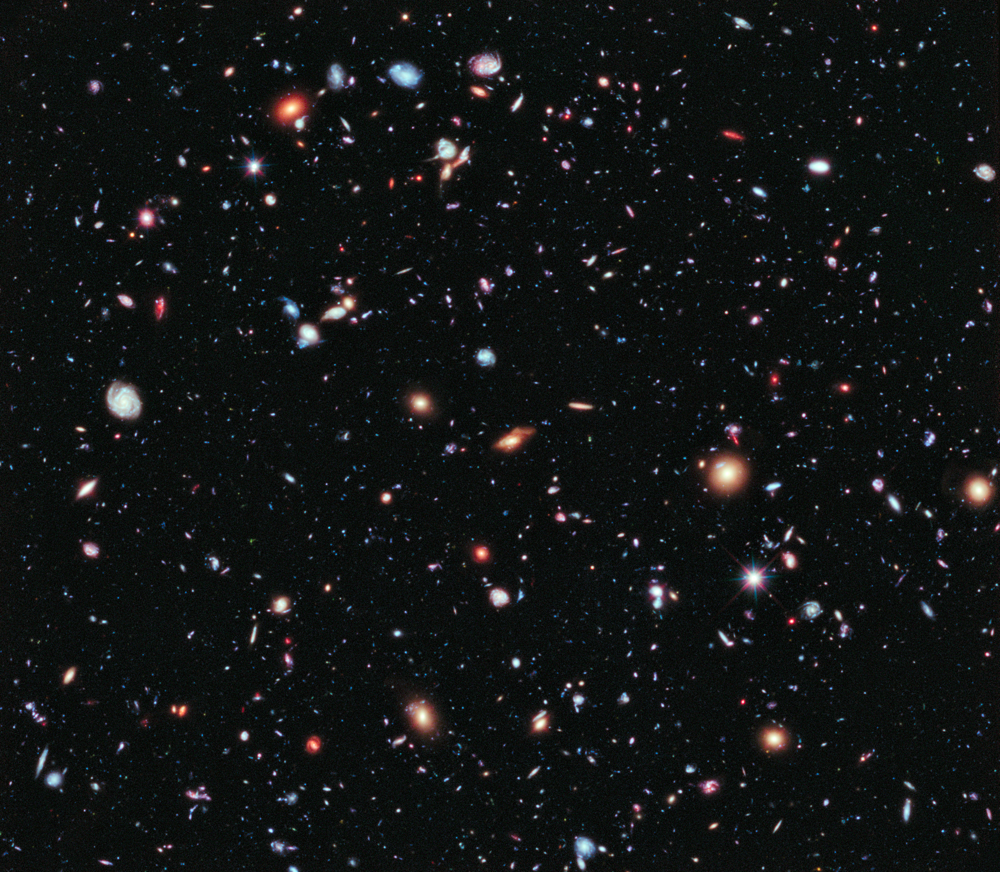
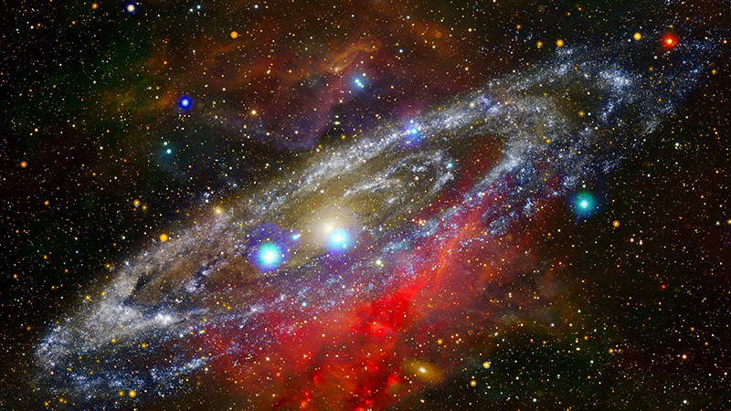
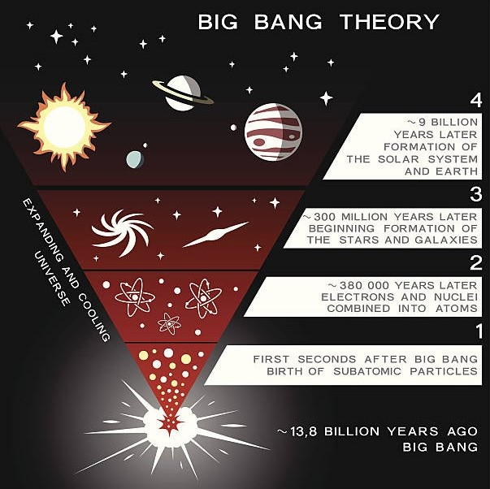
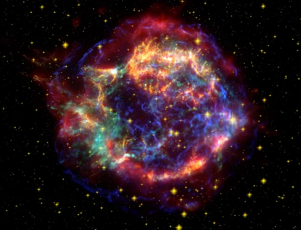

Cosmology is a branch of astronomy involving the science
of the universe's origin. It is the scientific study of the
large scale properties of the universe as a whole. Thus, it
studies how the history of the universe led to the stars, galaxies,
and other features we can observe today. The evolution of the
universe over billions of years requires meticulous observations,
intricate simulations, and mathematical models. Nonetheless,
advancements in technology and collaborative efforts continue
to drive our understanding of the complexities of the cosmos.

Cosmo-History
Originating from Einstein's 1917 static model of the universe,
cosmology initially emerged as a field within theoretical physics.
It saw significant advancements in its early stages, notably
influenced by the research conducted by Lemaître in 1927.
Remarkably, until as late as 1960, cosmology was commonly
perceived as belonging to the realm of philosophy.

The Big Bang
Astronomers combine mathematical models with observations to develop
workable theories of how the Universe came to be. The mathematical underpinnings
of the Big Bang theory include Albert Einstein's general theory of relativity
along with standard theories of fundamental particles.
The Big Bang Theory is the prevailing explanation for the origin of the universe.
It proposes that the universe began from a tremendously hot and dense singularity,
which rapidly expanded and stretched over the course of 13.7 billion years to form the
expanding cosmos we observe today. While direct observation of the universe's birth
is not yet possible, astronomers rely on mathematical formulas and models to understand
the Big Bang. One piece of evidence supporting this theory is the cosmic microwave background,
which serves as an "echo" of the initial expansion and is observable to astronomers.

Supernova
A supernova is the biggest explosion that humans have ever seen. Each blast is the
extremely bright, super-powerful explosion of a star.These spectacular events can be so bright
that they outshine their entire galaxies for a few days or even months. They can be seen across
the universe. supernovae represent extraordinary cosmic events that release colossal amounts of energy
and shape the evolution of the universe. They contribute to the formation of heavy elements, drive cosmic
expansion, and serve as invaluable tools for measuring cosmic distances. The study of supernovae continues
to provide profound insights into the nature of the cosmos and our place within it.

Frequently Asked Questions
1. How did the universe begin?
According to the Big Bang theory, the universe began as a singularity,
a point of infinite density and temperature. It then rapidly expanded
and continues to do so.
2. How old is the universe?
The current estimate for the age of the universe is approximately
13.8 billion years.
3. What is dark matter and dark energy?
Dark matter is an invisible and mysterious substance that makes up a significant portion
of the universe. It interacts gravitationally with visible matter but does not emit
or absorb light, hence its "dark" nature.
Dark energy is an unknown form of
energy that is believed to be responsible for the accelerated expansion of the universe.
It represents a large portion of the energy density of the cosmos.
4. What is the cosmic microwave background?
The cosmic microwave background (CMB) is the remnant radiation from the early universe,
which is detectable in the form of microwave radiation. It provides important insights into
the early stages of the universe's development.
5. How do scientists study the universe?
Scientists study the universe through a combination of observational and theoretical approaches.
They use telescopes, satellites, and other instruments to observe celestial objects, collect data,
and analyze it using mathematical and computational models.
6. What are galaxies and black holes?
Galaxies are vast systems of stars, gas, dust, and dark matter held together by gravity.
They form through the gravitational collapse of matter in dense regions of the early universe.
A black hole is an incredibly dense region in space where gravity is so strong that nothing,
including light, can escape its gravitational pull. They form from the remnants of massive stars.
7. What is the role of supernovae in cosmology?
Supernovae are powerful stellar explosions that release enormous amounts of energy.
They play a crucial role in the distribution of elements, the life cycle of stars, and our
understanding of cosmic expansion.
8. How does inflation theory explain the early expansion of the universe?
Inflation theory proposes that the universe underwent a rapid expansion in the early moments
after the Big Bang. It helps explain the uniformity of the cosmic microwave background and the
large-scale structure observed in the universe.
9. How do scientists measure the size and distance of celestial objects?
Scientists use various techniques, such as parallax, standard candles (like Type Ia supernovae),
and redshift, to measure the size and distance of celestial objects. These methods rely on the properties
of light and the laws of physics.
10. What is the role of mathematics in cosmology?
Mathematics is a fundamental tool in cosmology. It helps cosmologists develop models, formulate theories,
make predictions, and interpret observational data, allowing them to understand the complex workings of the universe.